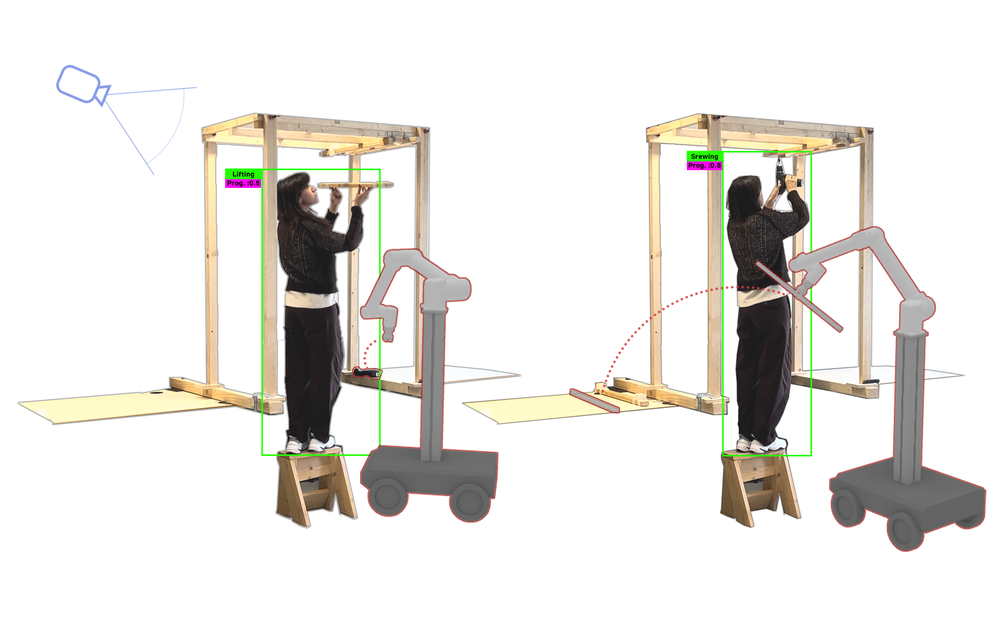

Research aim and research question.
The system design.
The system design - Human Action Recognition Model
The system design - Decision Making
The system design - Human-Robot Communication
The system design - Robot Execution
The system design - Result